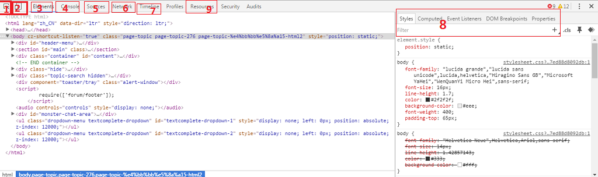

任务五
样式有几种引入方式?
- 行内式：在标签的style属性内设置css样式。
- 嵌入式：写在页面的标签内，单个页面还行，页面多时，不易维护。
- 连接式<link rel="stylesheet" type="text/css" href="mystyle.css">推荐使用。
- 导入式@important “mystyle.css” 。
link 和 @import有什么区别
- link引用CSS时，在页面载入时同时加载；@import需要页面网页完全载入以后加载。
- link是XHTML标签，除了加载CSS外，还可以定义RSS等其他事务；@import属于CSS范畴，只能加载CSS。
- link是XHTML标签，无兼容问题；@import是在CSS2.1提出的，低版本的浏览器不支持。
- link支持使用Javascript控制DOM去改变样式；而@import不支持。
文件路径../main.css 、./main.css、main.css有什么区别
- ../main.css指的是上一级文件夹下的main.css。
- ./main.css当前文件夹下的main.css，效果与main.css一样。
- main.css当前文件夹下的main.css，效果与./main.css一样。
console.log是做什么用的
- javascript里面做调试用的，打开控制台在console里可以做调试，具体用法尚未接触到,百度的结果看得不怎么明白。
text-align: justify是什么
- justify 可以使文本的两端都对齐。在两端对齐文本中，文本行的左右两端都放在父元素的内边界上。然后，调整单词和字母间的间隔，使各行的长度恰好相等。(如下)
- justify 可以使文本的两端都对齐。justify在两端对齐文本中，justify文本行的justify左右两端都放在父元素的内边界上。然后，调整单词和justify字母间的间隔，使各行的justify长度恰好相等。
px、em、rem分别是什么？有什么区别？如何使用
- px:像素，用PX设置字体大小时，比较稳定和精确将，可以获得失真最小的一致性。然而网站访客在缩放浏览器时原有的网页布局有可能会被打破。
- em:根据基准来缩放字体的大小。EM实质是一个相对值，而非具体的数值。em的问题是字体大小会随着层级叠加。例如li的字体大小是15px，但li里的li则会因为1.25*15px而叠加到18.75px，若再有一层li，则会进一步1.25*18.75叠加上去……。
- rem:rem的字义是「root em」，简单地说，就是先宣告一个所有网页元件都共用的em单位：html { font-size:75% } /* 16px*75%=12px */接着，所有字体大小都依此标准来设计制定：body { font-size:1rem } /* 1*12px=12px */h1 {font-size:2rem} /* 2*12px=24px */等等。
对chrome 审查元素的功能做个简单的截图介绍
1.页面元素选择器，可以选中页面部分元素，下面会出现该元素对应的HTML、CSS、JS等。
2.该按钮可以模拟不同分辨率，可用此查看不同分辨率下该网页效果(也可模拟移动端)。
3.Elements面板里包含最基本的功能，也是最实用的功能。面板的左侧是网页整体的层次图,Elements面板的右侧(8处)是元素的几个基本属性面板，包括元素的Styles(样式)、computed(计算出的网页布局模型)、Event Listeners(事件监听)。
4.console面板，可在此处调试JS
5.sources面板，可在此处打开该网页上的所有文件，图片、JS文件、 CSS等。
6.network面板，可查看网页内容的加载速度加载时间。
7.Timeline工具会详细检测出在Web应用加载的过程中时间花费情况的概览，包括下载资源、处理DOM事件、页面布局渲染、向屏幕绘制元素等。可以通过分析Timeline得到的事件、框架和实时的内存用量，找出应用的性能问题。(来自搜索)
9.在资源面板可让您审查是在检查页面加载资源。它可以让你用HTML 5数据库，本地存储，饼干，应用程序缓存等互动。(来自搜索)